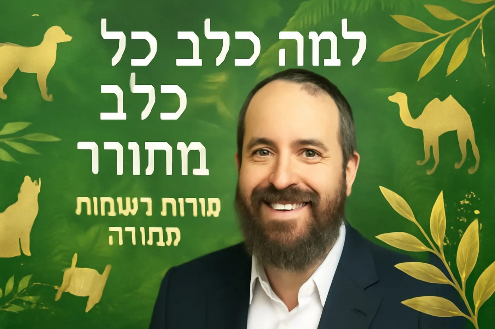

למה כלב נקרא כלב? הסודות המדהימים מאחורי שמות בעלי החיים
האם תהיתם פעם למה דווקא כלב נקרא כלב? או מה הקשר בין נמלה למילה "מלה"? פרשת בראשית מכילה אוצר של חכמה שנסתר מעינינו - השמות שהאדם הראשון קרא לבעלי החיים מגלים סודות מדהימים על הבריאה.
האדם הראשון - הבלשן הראשון
התורה מספרת שאלוקים הביא לאדם הראשון את כל בעלי החיים "לראות מה יקרא לו". זה לא היה תפקיד שרירותי של מתן שמות, אלא משימה עמוקה של הבנת המהות הפנימית של כל יצור.האדם הראשון היה החכם ביותר שחי על פני האדמה, והוא הבין את התכונה המיוחדת של כל בעל חיים וקרא לו שם המבטא את מהותו.
פנינים מדהימים מעולם החיות
כלב - כולו לב
למה אנשים כל כך אוהבים כלבים? כי הם "כולם לב" - מלאי אהבה ונאמנות. כשאתה מגיע הביתה, הכלב מגלה שמחה אמיתית לראותך.
נמלה - מלה את הגרעינים
הנמלה עושה דבר מדהים: היא חותכת כל גרעין לפני שמכניסה אותו למחסן שלה. למה? כי גרעין שלם יצמח כשיגיע הגשם, אבל גרעין חתוך יישאר מזון לחורף.
חמור - סמל החומריות
בעוד שור מכיר את בעליו, החמור שקוע בחומריות. הוא מכיר רק את האבוש שלו, לא את מי שמביא לו את האוכל. הנביא ישעיהו זועק: "ידע שור קונהו וחמור אבוס בעליו, ישראל לא ידע".
גמל - מסוגל להיגמל
הגמל יכול להיגמל מהמים למשך 17 יום! זו היכולת המיוחדת שלו שמאפשרת נסיעות במדבר.
המסר לימינו
השמות האלה מלמדים אותנו לראות את החכמה שבבריאה. כל דבר בעולם נברא בתכלית, וכל שם מכיל משמעות עמוקה.כשאנחנו מבינים את הסודות האלה, אנחנו זוכים להכיר את גדולת הבורא ואת המקום המיוחד של האדם בבריאה - בין השמיים לארץ, בין המלאכים לבעלי החיים.
לצפייה בשיעור המלא עם עוד פנינים מדהימים מפרשת בראשית: [קישור לסרטון]ערוץ הרב יהודה טאוב: https://www.youtube.com/channel/UCtW9paDQ9Gq6aVmAfuu8Onw
ציטוטים מעוררי השראה מהשיעור
ציטוט 1 - על חכמת השמות
"כל שם זה מדהים! האדם הראשון היה חכם מאוד מכל האדם שהיה על פני האדמה והתפקיד שלו היה להבין מה מונח בכל בעל חיים"הרב יהודה טאוב | פנינים מפרשת בראשית#חכמתהתורה #אדםהראשון #פרשתבראשית
ציטוט 2 - על הכלב הנאמן
"למה אנשים כל כך אוהבים כלבים? כי הוא כולו לב! הוא מגיע הביתה ומראה לך התלהבות עצמה, קופץ עליך"הרב יהודה טאוב | סודות השמות בתורה#כלב #נאמנות #אהבה
ציטוט 3 - על פלא הנמלה
"הנמלה חותכת כל גרעין שהיא לוקחת ורק אחרי שעשתה חור בגרעין, היא שמה אותו בחור שלה. אם חתכת את הגרעין לשניים - לא יצמח כלום"הרב יהודה טאוב | נפלאות הבריאה#נמלה #חכמתהטבע #בריאתהעולם
ציטוט 4 - על החומריות
"החמור הוא הסמל של החומריות. הוא כל כך שקוע שהוא לא יודע מי הביא לו את האוכל - יש כאן אבוס ולא יודע איך הגיע"הרב יהודה טאוב | מוסר מהתורה#חומריות #רוחניות #מוסר
ציטוט 5 - על מעלת האדם
"האדם הוא שילוב - הוא חצי מלאך וחצי אדמה. אדם יכול להגיע דרגות מאוד נפלאות בהכרת האלוקים"הרב יהודה טאוב | גדולת האדם#אדם #נשמה #רוחניות